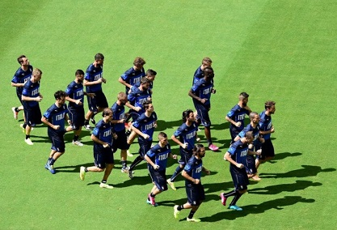

Montolivo: Germany is the biggest favorite, Brazil's personal ability is not as good as previous
Source: Netease Sports
Italian midfielder Montolivo, who was injured and missed Brazil in the early stages of the World Cup, recently accepted an interview with "Global Sports" at home. He said that the Italian team will enter the semi-finals and have a chance to hit the championship.
 Montolivo broke his left leg five days before the Italian team went to Brazil, and reluctantly quit the national team. The Milan midfielder was very sad about this: "I feel very disappointed and a little angry, and the mood is more complicated. At that time, there were only five days left to go to Brazil. This kind of injury is really difficult to accept, but professional players have to face it. It’s a risk. It’s my dream to play the World Cup with my teammates, but because of injuries, it’s impossible. I watch the game on TV at home. When there is an Italian team game, I arrange some dinner with my family and friends for everyone to watch.
At present, the Brazil World Cup has entered the second round of the group stage. For the previous game, Montolivo thinks it is very exciting. He thinks that Germany and the Netherlands have left him the deepest impression. “Of course Italy’s performance is also very good. They are a very competitive team."
Regarding the biggest favorite to win this World Cup, Montolivo said, "Our defense is very stable, and our players are also very impactful. I believe that the Italian team can reach the semifinals, and we have the strength to do it. The Netherlands, Brazil and Germany hope to occupy the other three semi-finals. If the Italian team stops in the knockout round, I will support the German team because I think they are the favorites to win the most."
Regarding Neymar and his Brazilian team, Montolivo commented: "Neymar and Oscar performed very well. I think Thiago Silva is the best player in the Brazilian team. He may also be the best in the world. Good central defender. The disadvantage of the Brazilian team is that their players are not as good as the previous ones, but their overall cooperation is still very strong. They are not in the best form and will play better later. Therefore, I firmly believe in them. Can also enter the semifinals."